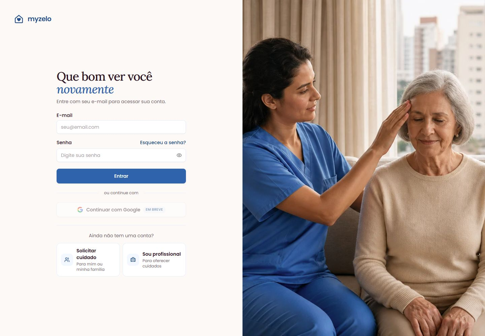

Começando
Entrar e sair da conta
Acesse sua área familiar e encerre a sessão quando terminar.
Entrar com e-mail e senha
- Abra Entrar.
- Preencha E-mail e Senha da sua conta familiar.
- Clique em Entrar. Se ainda faltar a configuração inicial, conclua o nome e o WhatsApp.
- Ao entrar, confira o nome no menu da conta para ter certeza de que está usando o acesso correto.


Encerrar sua sessão
- Abra o menu da conta, identificado pelo seu nome.
- Escolha Sair.
- Para retornar, entre novamente com suas credenciais.
Se não lembrar sua senha, siga Recuperar acesso — esqueci a senha.
Resultado esperado
Você acessa a área familiar ou encerra a sessão com segurança.
Regras que você precisa conhecer
- O tipo da conta determina a área aberta após o login. Não há uma troca de familiar para profissional dentro deste manual.
- Não é necessário fazer um novo cadastro para cada pessoa assistida.
- Se houver erro de acesso, confira o e-mail e use a recuperação de senha.